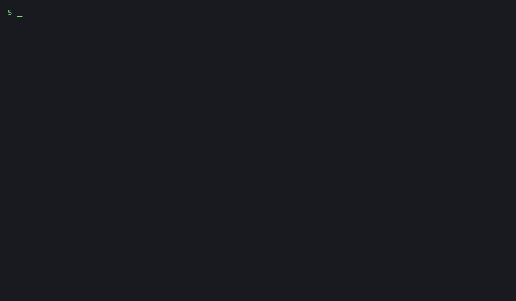
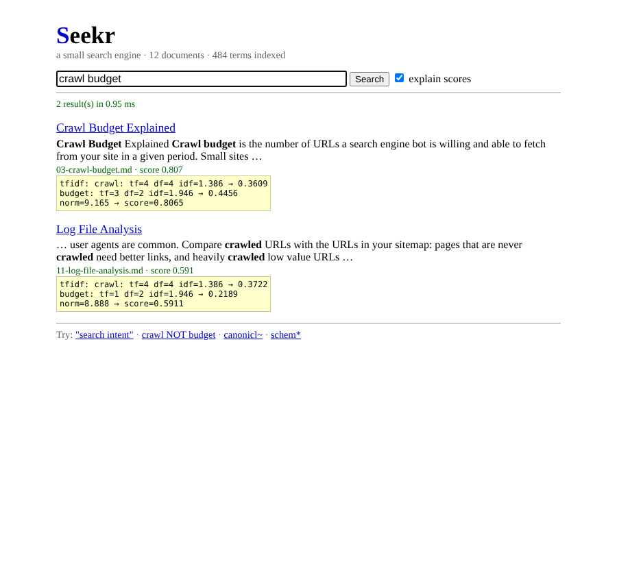

Seekr
A small search engine built to understand how search works: positional inverted index, TF-IDF and BM25 ranking, boolean, phrase and fuzzy queries, highlighted snippets, a persisted index and a web UI. Python standard library only.
Source code on GitHub README Release v1.0
Try it in your browser
This page runs a small JavaScript port of the same tokenizer and TF-IDF formula over the 12 bundled SEO articles. The real engine is the Python package in the repository.
Supported here: implicit AND, OR, NOT / -term, "exact phrase". Fuzzy (~), prefix (*), grouping and BM25 are in the Python version.
How it works, step by step
Search is fast because the work is done before you type. Each step below is live: change the text and watch it.
1. Turn text into terms
Every document and every query goes through the same pipeline: split into words, lowercase, drop stop words (too common to help), then reduce word forms to a stem so "crawling" and "crawled" meet at "crawl". Each kept term remembers its position.
2. Build the inverted index
The index is like the index at the back of a book: term → {document → [positions]}. Looking up a word is one dictionary access, so it does not matter how many documents do not contain it. Pick a term from the bundled corpus:
3. Rank the matches
score = Σ (1 + ln tf) · ln(1 + N/df) / √length. A word repeated ten times counts less than ten times; a rare word says more than a common one; long documents are damped. Tick "explain scores" in the search box above to see these numbers for any result.
4. Why it is worth it
Scanning every file for every query costs time proportional to the whole collection. The index answers from a dictionary. On 20,000 synthetic documents (48 MB) a rare-term query takes about 4 ms against about 500 ms for scanning all files. On the 12 bundled articles both are instant, because the collection is tiny; the benefit only appears at scale.
Terminal demo

The commands are really executed; their output is rendered into the GIF by scripts/make_demo_gif.py.
Web UI of the Python version

What is inside
| Part | What it does |
|---|---|
| Tokenizer | Lowercase, Unicode-aware words, stop words, light stemmer; positions keep dropped stop words so phrases stay exact |
| Inverted index | term → {document → [positions]}, one dictionary lookup per term |
| Query language | AND / OR / NOT, grouping, phrases, fuzzy (Levenshtein ≤ 2), prefix |
| Ranking | TF-IDF with smoothed idf and length normalisation; BM25; per-term explanation |
| Persistence | gzip JSON with delta-encoded positions, atomic write |
| Quality | 25 unit tests, benchmark against brute-force scanning |
Measured on 20,000 synthetic documents (48 MB): rare-term queries answer in about 4 ms, roughly 127 times faster than scanning every file; full numbers and limits are in the README.